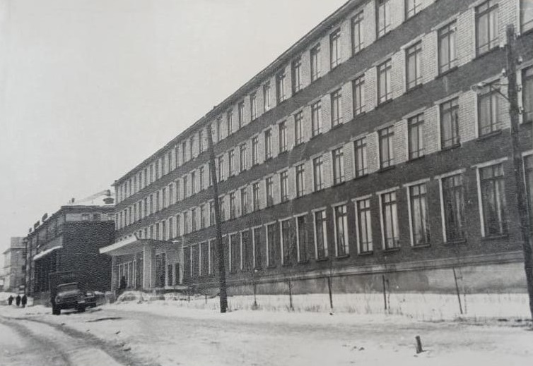
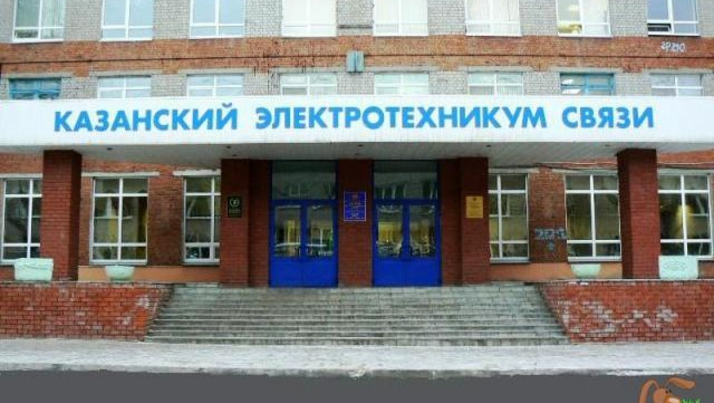
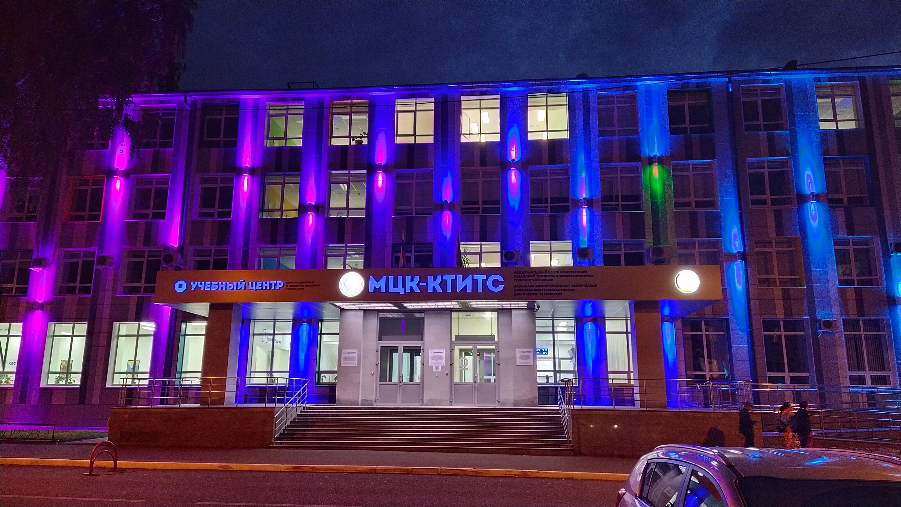

| Главная | История | Преподаватели | Группа |
От телеграфа к технологиям: История Международного центра компетенций в Казани
В начале 1930-х годов молодая советская республика остро нуждалась в специалистах, способных соединить ее огромные пространства. В ответ на этот вызов 31 августа 1932 года на базе учебно-производственного комбината связи был рожден Казанский электротехникум связи — будущий МЦК-КТИТС.
Его начало было скромным: всего 217 студентов, пять учебных групп и три специальности — «Радиовещательные устройства», «Городские телефонные станции» и «Телеграфия». Занятия и жизнь первых учащихся проходили в нескольких комнатах, выделенных в здании Управления связи. Но уже к первому выпуску в 1935 году здесь были свои мастерские, лаборатории и библиотека.
Судьбоносным испытанием стала Великая Отечественная война. Техникум не прекращал работу, готовя радистов, телефонистов и телеграфистов для фронта. Многие преподаватели и выпускники ушли воевать, а оставшиеся в тылу помогали стране, работая на заводах и в госпиталях. Это время закалило дух учреждения, доказав его жизненную необходимость.
После войны, в эпоху бурного развития телевидения и радио, техникум рос и расширялся, начав готовить кадры для всего Советского Союза. А с наступлением цифровой эры он совершил свой главный поворот. Из кузницы кадров классической связи он превратился в ведущий IT-центр Приволжья. В 2020 году, получив высокий статус, он стал называться Государственным автономным профессиональным образовательным учреждением «Международный центр компетенций — Казанский техникум информационных технологий и связи» (ГАПОУ «МЦК-КТИТС»).
МЦК-КТИТС сегодня: Цифровой двигатель региона
Сегодня это динамичный образовательный комплекс, где учатся около 1700 студентов. За почти столетнюю историю его стены покинули более 40 тысяч специалистов, и около 80% кадров среднего звена на казанских предприятиях связи — его выпускники.
Техникум живет в ритме времени, предлагая актуальные специальности:
Обучение идет в двух современных корпусах общей площадью более 10 тысяч кв. метров, где расположены 38 лабораторий и мастерских, оснащенных самым современным оборудованием. Это позволяет не просто учить теории, а отрабатывать навыки на практике. Успехи студентов говорят сами за себя: техникум неоднократно признавался лучшим в России по версии WorldSkills Russia, а его команды достойно представляют страну на европейских и мировых чемпионатах профессионального мастерства.
Но МЦК-КТИТС — это больше, чем аудитории и лаборатории. Это сообщество. Для студентов работают спортивные залы, секции, библиотека с фондом в 140 тысяч книг. Регулярно проходят культурные мероприятия, концерты и олимпиады.
Уникальность центра — в его открытости для всех поколений. Помимо основной программы, здесь работает детский центр IT-творчества «IT-Cube» для школьников и программа «Старшее поколение», где люди старше 50 лет могут бесплатно освоить цифровые профессии.
Отправляя в 1935 году первых специалистов по телеграфу и телефону, техникум вряд ли мог представить, что спустя десятилетия здесь будут готовить разработчиков виртуальной реальности и специалистов по искусственному интеллекту. Но суть осталась прежней: быть надежной кузницей кадров, которые соединяют людей, создают будущее и двигают прогресс. Из небольшого электротехникума МЦК-КТИТС вырос в мощный международный центр, продолжая писать свою историю успеха, которая началась с нескольких комнат и веры в силу связи.
  
| 1967год | 2004 год | 2025 год |